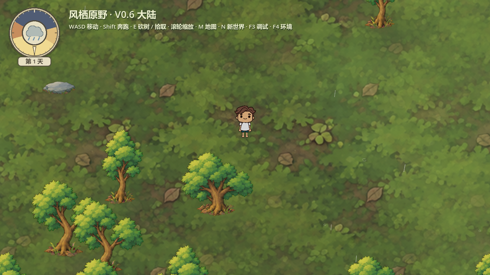
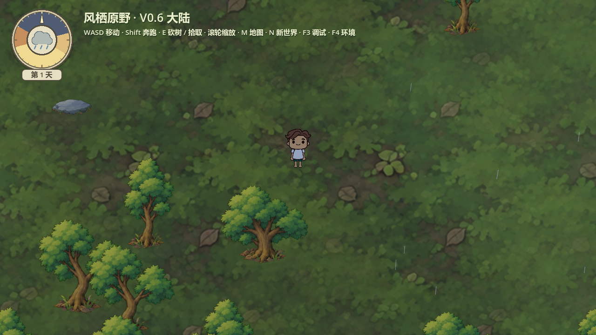
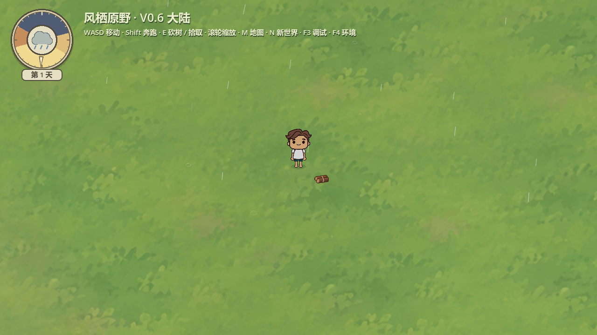
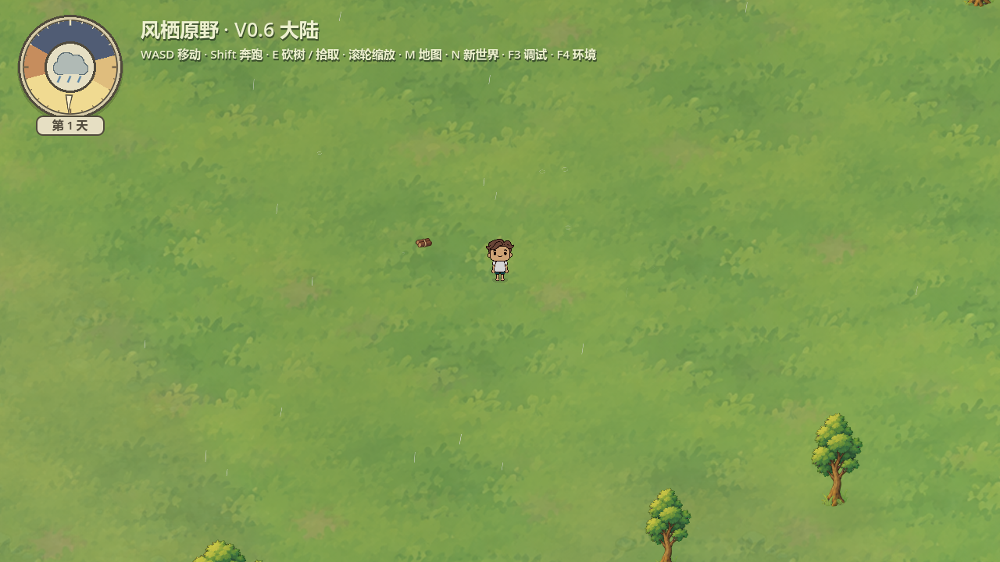
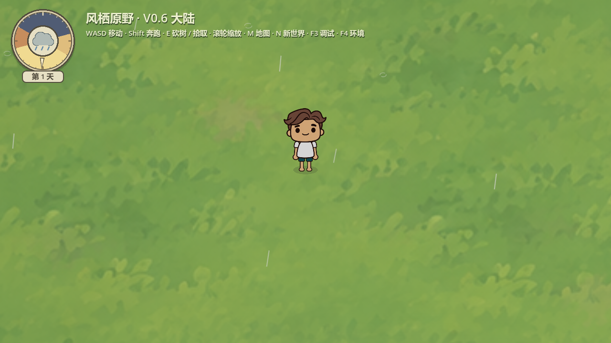

雨丝维持减量与随机间隔；长度7–15改13–22世界像素，白色alpha0.17–0.32改0.48–0.68，宽0.9改1.15。落地断弧保持。移除合成水滴声和调试开关，暂不播放雨声。
双击项目根目录 Start-Playtest.cmd，F4选择雨天，25秒渐入。
专项38项、0失败；Godot4.7.2 / Compatibility / RTX5060，短时180帧60FPS限帧样本：中位16.632ms，P95 16.703ms；不作为全地图性能承诺。




